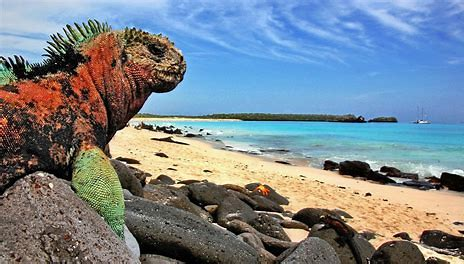

Galápago

NOMBRE Y CIENTIFICO :Galápago (Testudo)
Hábitat: Los galápagos (también conocidos como tortugas terrestres) habitan principalmente en áreas secas y cálidas, como las Islas Galápagos, pero también pueden encontrarse en otras zonas áridas o semiáridas del mundo. Prefieren terrenos rocosos, matorrales y praderas donde pueden alimentarse de vegetación.
Estilo de vida: Los galápagos son animales terrestres y herbívoros, que pasan la mayor parte de su vida en tierra. Son animales muy lentos y pasan gran parte del tiempo descansando o alimentándose de plantas, hojas y frutos. Son conocidos por su longevidad y su carácter tranquilo.
Características:
- Caparazón duro: Los galápagos tienen un caparazón grueso y duro que les sirve como protección contra depredadores. Este caparazón es una de las características más destacadas y tiene una forma que varía según la especie.
- Longevidad: Son conocidos por su increíble longevidad, llegando a vivir más de 100 años en algunos casos. Algunas especies, como la tortuga de las Islas Galápagos, pueden vivir hasta 150 años.
- Lento movimiento: Su estilo de vida tranquilo se refleja en su forma de moverse. Son animales lentos, tanto en su caminar como en sus reacciones, lo que les da una vida tranquila.
- Alimentación herbívora: Se alimentan principalmente de hierbas, hojas, frutas y cactáceas, y son importantes para el ecosistema porque ayudan a dispersar semillas.
- Adaptación al calor: Los galápagos están adaptados a climas cálidos y secos. Su caparazón les proporciona sombra y protección del calor intenso del sol, además de poder almacenar agua en su organismo para períodos secos.
El galápago es un símbolo de longevidad y adaptación en la naturaleza, conocido no solo por su resistencia al paso del tiempo, sino también por su peculiar y eficiente forma de vida.
regresar al menu